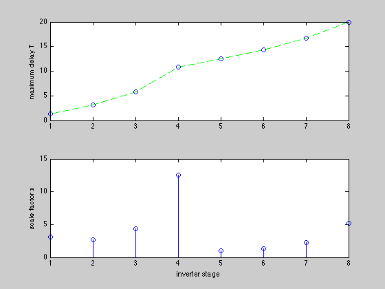

Digital circuit sizing for an inverter chain (GP)
N = 8;
CL = 20;
Dmax = 20;
x_min = 1;
x_max = 20;
primary_inputs = [N+1];
primary_outputs = [N+2];
M = N + length( primary_inputs ) + length( primary_outputs );
FI{1} = [N+1];
for k = 2:N
FI{k} = [k-1];
end
FI{N+2} = [N];
FO = cell(M,1);
for gate = [1:N primary_outputs]
preds = FI{gate};
for k = 1:length(preds)
FO{preds(k)}(end+1) = gate;
end
end
Cin_norm = ones(N,1);
Cint_norm = ones(N,1);
Rdrv_norm = ones(N,1);
Cin_norm(5) = 80;
Cin_po = sparse(M,1);
Cin_po(primary_outputs) = CL;
Cload_pi = sparse(M,1);
Cload_pi(primary_inputs) = 1;
cvx_begin gp
variable x(N)
variable T(N)
minimize( sum(x) )
subject to
Cin = Cin_norm.*x;
Cint = Cint_norm.*x;
R = Rdrv_norm./x;
Cload = cvx( zeros(N,1) );
for gate = 1:N
if ~ismember( FO{gate}, primary_outputs )
Cload(gate) = sum( Cin(FO{gate}) );
else
Cload(gate) = Cin_po( FO{gate} );
end
end
D = 0.69*ones(N,1).*R.*( Cint + Cload );
for gate = 1:N
if ~ismember( FI{gate}, primary_inputs )
for j = FI{gate}
D(gate) + T(j) <= T(gate);
end
else
D(gate) <= T(gate);
end
end
output_gates = [FI{primary_outputs}];
circuit_delay = max( T(output_gates) );
circuit_delay <= Dmax;
x >= x_min;
x <= x_max;
cvx_end
disp(' ')
disp(['Note: there is an extra capacitance between the 4th and 5th inverter'...
' in the chain.'])
fprintf(1,'\nOptimal scale factors are: \n'), x
close all;
subplot(2,1,1); plot([1:N],T,'g--',[1:N],T,'bo');
ylabel('maximum delay T')
subplot(2,1,2); stem([1:N],x);
ylabel('scale factor x')
xlabel('inverter stage')
Calling SeDuMi: 486 variables (10 free), 267 equality constraints
------------------------------------------------------------------------
SeDuMi 1.1 by AdvOL, 2005 and Jos F. Sturm, 1998, 2001-2003.
Alg = 2: xz-corrector, Adaptive Step-Differentiation, theta = 0.250, beta = 0.500
Split 10 free variables
eqs m = 267, order n = 242, dim = 752, blocks = 23
nnz(A) = 922 + 0, nnz(ADA) = 2903, nnz(L) = 1690
it : b*y gap delta rate t/tP* t/tD* feas cg cg prec
0 : 4.99E-001 0.000
1 : 1.03E+001 1.93E-001 0.000 0.3866 0.9000 0.9000 3.33 1 1 2.0E+000
2 : 7.10E+000 8.29E-002 0.000 0.4295 0.9000 0.9000 1.72 1 1 7.1E-001
3 : 5.03E+000 2.56E-002 0.000 0.3092 0.9000 0.9000 1.29 1 1 2.1E-001
4 : 3.98E+000 7.39E-003 0.000 0.2884 0.9000 0.9000 1.13 1 1 5.8E-002
5 : 3.73E+000 2.69E-003 0.000 0.3635 0.9000 0.9000 1.20 1 1 2.0E-002
6 : 3.56E+000 8.29E-004 0.000 0.3085 0.9000 0.9000 1.14 1 1 5.8E-003
7 : 3.50E+000 1.95E-004 0.000 0.2349 0.9000 0.9000 1.09 1 1 1.3E-003
8 : 3.48E+000 3.56E-005 0.000 0.1829 0.9000 0.9000 1.06 1 1 2.3E-004
9 : 3.48E+000 1.25E-006 0.000 0.0351 0.9900 0.9900 1.05 1 1 8.0E-006
10 : 3.48E+000 2.89E-008 0.015 0.0231 0.9900 0.9900 1.05 1 2 1.8E-007
11 : 3.48E+000 2.71E-009 0.497 0.0938 0.9900 0.9900 1.00 3 4 1.7E-008
12 : 3.48E+000 6.22E-011 0.266 0.0230 0.9000 0.0000 1.00 8 10 6.8E-009
iter seconds digits c*x b*y
12 0.2 Inf 3.4785871253e+000 3.4785873491e+000
|Ax-b| = 4.1e-008, [Ay-c]_+ = 3.9E-009, |x|= 2.4e+001, |y|= 1.3e+001
Detailed timing (sec)
Pre IPM Post
0.000E+000 2.003E-001 0.000E+000
Max-norms: ||b||=4.380570e+000, ||c|| = 2.202759e+000,
Cholesky |add|=0, |skip| = 0, ||L.L|| = 102.972.
------------------------------------------------------------------------
Status: Solved
Optimal value (cvx_optval): +32.4139
Note: there is an extra capacitance between the 4th and 5th inverter in the chain.
Optimal scale factors are:
x =
3.0526
2.6619
4.3605
12.5013
1.0000
1.3273
2.2520
5.2444
